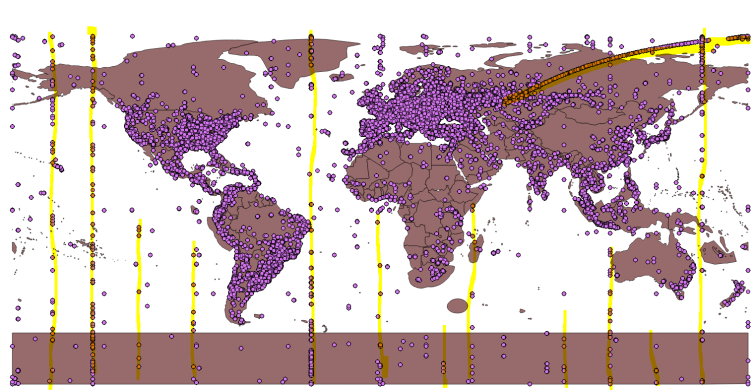
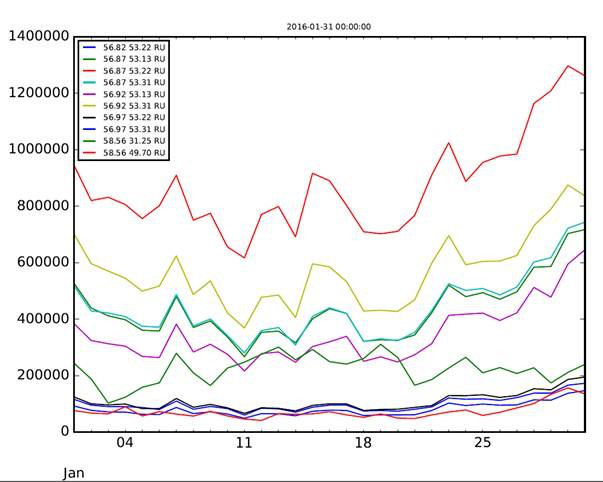
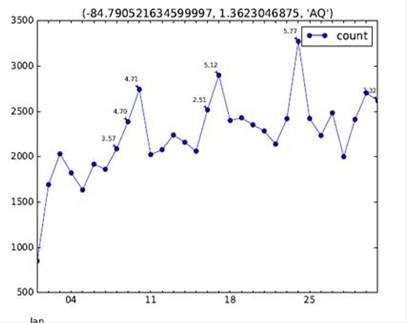
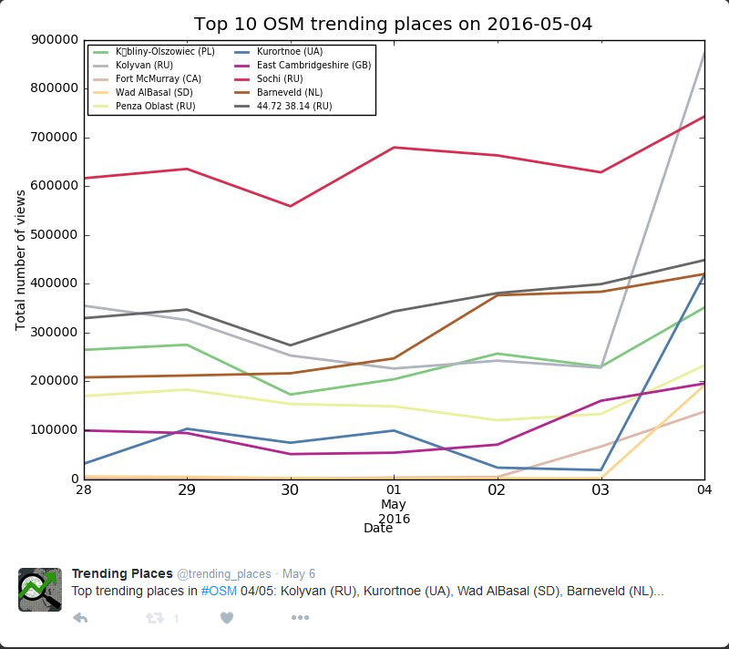

Trending Places in OpenStreetMap
Trending...
Project maintained by geometalab Hosted on GitHub Pages — Theme by mattgraham
See Twitter Account
About Project "Trending Places in OpenStreetMap"
Trending places aka OSM place trends, inspired by Google Trends, is an analysis of the views on the OSM tiles which could help us determine the trends in views of these places i.e. which places are gaining popularity due a hike in views and try to link them with the latest news around that region.
What is a Trending Place?
Places that have unusually higher views than their normal views, implying that places like tourist hot spots are not trending unless there is an increase in the number of views from the average.
How significant is a trend?
Once the 'trending' places or the places with a significant relative hike in views are determined, they need to be ranked relative to each other as well.
- To get the top 10 trending places world wide, the significance is determined as a parameter of the world population-the more number of people looking at it, the more significant the trend is.
Say for two places TouristyPlace_A, UnseenVillage_B the relative hike in views from average is 20%. However, 20% of the TouristyPlace_A is about 500 views, while that of an UnseenVillage_B is 20 people. Thus, the trend is TouristyPlace_A will be considered more significant and ranked higher than UnseenVillage_B.
Anonymization of tile logs
The tile log views of the slippy map of OpenStreetMap (OSM) are logged and published daily with a lag of 2 days. The log never contains less than 10 hits for any given tile and it is accessed at least 10 times by 3 different IP Addresses The pseudo-code for this anonymization as provided by Matt Amos (OSM) is as follows:
Challenges
Crawling activity on osm
Clustering around a trending place
The open source nature of OSM, as well as development with OSM leads to several crawling activities on OSM which are highlighted in the image below. The lack of availability of I.P Address to track these artifacts makes it difficult to filter them out and they often hamper the results. Certain artifacts like the curve trail over Russia on the upper right hand side is a periodic crawling phenomenon.
Fig. January, 2016 All places with views. Major Discrepancies highlighted
While filtering out top n trending places, often the n places that appear are quite close to each other. An example can be seen in the image below. This phenomenon is expected because users tend to view an several tiles close by while viewing a particular place. A small algorithm to detect these clusters and reserve only the highest viewed place amongst the top trending was added in the code and this issue was resolved.
Fig. January 31st 2016, Graph of total views vs. date of top 10 trending places. The similar structure of the graphs suggest that the places are a cluster and have been viewed together.
Ranking the importance of trending places
A T-score is calculated for the total views over n days (By default and the minimum required is 7 days). Hikes in places are detected based on the T-score which in broad terms is the number of standard deviations the views on a particular day are away from the mean. After analysis and testing of the OSM data, a cut off T-score of 3.5 was decided. However, on fetched top 'x' places with the highest T-score implying highest deviation from mean often resulted in displaying insignificant peaks as can be compared in Fig. A and Fig B. below.

Fig A. January 31st 2016, Graph of total views vs. date of lat, lon: -84.79, -140.58 in Antarctica. with the T-score pointed out. It can be seen that the place has almost 0 views usually, but a small spike of nearly 75 views gives it a very high Tscore of nearly 6. The question is, how important is the trend for this place versus another place with regular views?
Fig B. January 31st 2016, Graph of total views vs. date of lat, lon: -84.79, 1.3623.58 in Antarctica. with the T-score pointed out. The place has regular views and a T-score of 5.77 when the deviation from the average views is nearly 1000. Compared to the place in Fig A. Should this have a higher trend?
A scatter plot for absolute deviation in views and T-score suggested the threshold level for abs increase. Further, the ranking was decided in the following manner. An absolute increase in views of all places was calculated. The worldwide median of these absolute views was calculated and the trending places were ranked based on the relative increase in absolute views of the places over the world wide median. A median was chosen instead of mean because median get less effected by outliers or peaks. The logic behind this ranking is that the importance 'trending places' worldwide is a parameter of the world human population looking at OSM maps. Over time, as more and more people use OSM, the absolute increase in views of all places in OSM will increase. The places that have a greater increase than the usual (median in our case) will have a more significant trend.
Example of Positive Result
Fort McMurray, Canada was a victim of wildfire in the beginning of May 2016. It appeared on the Trending places on 4th May, 2016.
Fig. shows the Twitte bot tweet on 4th May, 2016 with the attached graph for the Top 10 trending places and the status text. Due to a limit on the length of tweet the names of all Trending places are not tweeted and Ellipsis is appended after the word limit is reached. However, all names can be seen on the graph. Places with names in non english characters are replace with the lat and lon values and country code.
More about the code
- Increase the sampling from 7 days to greater: Currently, the code fetches data for past 7 days(default). This value can be changed to 'n' days for a greater sample accuracy by adding an input parameter --period 'x'. However, 7 is the minimum required data. Top 10 trending places are stored by default. Even this value can be changed to store more than 10 places by specifying --count.
- The code 'Top_trending.py' can also provide output for trending places over a range of dates at once. However,
sufficient data should be fetched from Fetch2.py depending on your period and your range of dates.
For example to get all trending places from 4th May, 2016 to 7th May, 2016, the data must be fetched from
28th May, 2016 up to 7th May, 2016 (for a 7 day period). It can then find the top trending places and graphs at once.
However, the twitter bot only tweets the items for ONE DAY ONLY(the current date - lag). So the rest of the days will have to be extracted
manually from the database trending_places.db.
This can be done by (you can iterate over your date range by using a for loop, this example if for a particular date)
from Reverse_Geocoding import FormatOSMTrendingNames, ReverseGeoCode # Set a date date='2016-05-04' # For printing the names print(FormatOSMTrendingNames().get_cities_from_file(date,'world' ,300)) # For getting the graph print (FormatOSMTrendingNames.get_trending_graph(date,'world'))The graph is stored under the name Tile_log\Trending_Graphs.png. The 'world' parameter implies that the trending places are obtained world wide. If the country parameter is specified for running Top_trending.py, then 'world' can be changed to the country code such as 'CH' in order to get the top trending places of that country. - Structure of trending_db database:
world_or_region ¦ lat ¦ lon ¦ country_code ¦ last_day ¦ view_last_day ¦ zoom ¦ tms_x ¦ tms_y ¦ t_score ¦ rolling_median ¦ abs_med ¦ trending_rankThe 'world_or_region' stores where the results are world wide or specific to a country and 'last_day' stores the date on whic a place is trending. The res of the columns are pretty self explainatory.
- Currently, the tile views are aggregated at zoom level 10. For each higher zoom level, the time taken by the program increases since the number of tiles increases four times. The bottleneck of the program is the 'resampling' function where the data is resampled to fill missing dates with value zero for every place
- How to increase the speed due to the resampling? A Cache folder exists in the program that stores the resampled values in a csv file. At the moment, the Twitter Bot tweets only once daily, worldwide but if it is extended in the future to support trending places per country etc. The resampled file is simply extracted from the Cache folder and then it takes less than five minutes to continue the rest of the processing. At the moment, the resampled file is automatically deleted by the program if its modification date is not the current date. For quick analysis or debugging of the code, you can store a copy of any resampled file on your computer. You can copy this file to the Cache folder and run the program for the given date for faster results. If you simply open the resampled file and save it once to set the modified date at current date, the program will not delete it from the Cache while running.A sample is available under docs on Github
Authors and Contributors
- Main author: Bhavya Chandra (@BhavyaLight)
- Supervisor and contributor: Prof. Stefan Keller (@sfkeller)
- Thanks to help from: Matt Amos, Lukas Martinelli (@lukasmartinelli), Pavel Tyslacki(@tbicr), Joost Schouppe